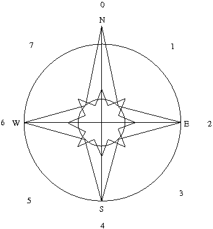
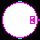
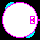
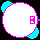
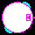
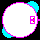

Introduction
This is the package that exports all the things that cause things to be
shown on screen. It manages the display of background, moving objects,
update window and manages input. The graphics library is also
responsible of mapping from a tile keyword to a given image.
Within the graphics library, directions are referred to as "north", "east",
"south" and "west" (and combinations of these). Depending on exact circumstances, these directions will be numerically coded as the integers 0-7 or as keywords.

Mapping tiles to images
The mapping from tile to image is done with the MAP-FILE macro.
MAP-FILE takes a keyword designator and a file-name as arguments. The
file-name is then merged with *FILE-PATH* (defined in globals.lisp,
defaults to "source-directory/graphics/", change before calling
map-file). The MAP-FILE macro is evaluated at load time.
At the moment, the only supported bitmap format is XPM. People are
enthusiastically encouraged to write readers for other bitmap formats
(in CL, ideally). In the end, the file-reading function is dispatched
depending on mappings in *IMAGE-TYPES*, a hashtable using file type as
key and a file-reading function as value.
Mapping movables to images
The mapping from a movable object to a set of images is done with the
MAP-ANIMATIONS macro. This macro takes three arguments: the class name
of the movable to map, a list specifying base images for animatiosn
for up/down/left/right movement and a list specifying base images for
diagonal movement.
A base image specification is a list like (file-name frame# ...),
so listing image file and what frames in sequence they will be used
in. It is a limitation that diagonal animation sequence has to be as
long as non-diagonal (though it's a limitation that probably isn't too
bad).
The base images should be pointing "east" and "south east". These will
be rotated in 90° increments, to form the images for the remaining
orientations. Two clip masks will be formed, one selecting only the
non-black and one selecting only the black parts of the image ("black"
means all of Red, Green and Blue are 0), to provide the illusion of
transparence of the moving image.
Animation example
As an example how animations can be built and declared in the game, I
will use the player animations from Gatlopp.
(map-animation player
(("player-purple-0.xpm" 0 4 8)
("player-purple-1.xpm" 1 3)
("player-purple-2.xpm" 2)
("player-purple-3.xpm" 5 7)
("player-purple-4.xpm" 6))
(("player-purple-diag-0.xpm" 0 4 8)
("player-purple-diag-1.xpm" 1 3)
("player-purple-diag-2.xpm" 2)
("player-purple-diag-3.xpm" 5 7)
("player-purple-diag-4.xpm" 6)))
This results in an 8-frame animation cycle, that looks as follows:
| Frame# | 0 | 1 | 2 | 3 | 4 | 5 | 6 | 7 |
| Straights |
 |
 |
 |
|
|
 |
 |
|
| Straights |
|
|
|
|
|
|
|
|
There is another animation-mapping macro available, for those wanting
"false-perspective" animations. The macro is named
MAP-PERSPECTIVE-ANIMATION and takes 8 lists of animation
specifications (similar to MAP-ANIMATION).
Exported symbols
- *background*
- An X11 pixmap, where upon the map data is drawn. It should be
enough to contain the whole map. By calling ENSURE-BACKGROUND, this
will be taken care of.
- *display*
- The X11 display.
- *file-path*
- Base pathname for assorted graphics and map loading.
- *font-preference*
- List of fonts, in order from "most preferred" to "least
preferred" for in-game text.
- *game-over*
- Boolean for determining if a game is over or not. May be used
freely by any end-user.
- *game-window*
- The X11 window in which all graphics will end up being displayed.
- *gcontext-set*
- An X11 GContext, with blck background and white foreground.
- *generator-ai-map*
- A mapping from generator type to generator AI.
- *image-types*
- A mapping from image file extension to image file reader.
- *moving-objects*
- A list of all movable objects currently active.
- *player*
- Should contain a player object, referring to the current
player.
- animated-object
- Class containing all animation data for a moving-object.
- check-move
- (check-move object tile offset-x
offset-y)
Generic function, testing to see if a movable
object can or cannot move onto a specific tile.
- collide
- (collide object-1 object-2)
Generic function, handling collisions.
- clone
- (clone type &rest args &key (x 0 x-p) (y 0 y-p) (direction 0) &allow-other-keys)Create new movable object, cloned from a base template of the
type. The keys :x :y and :direction are used directly by clone, the
rest are passed on to MAKE-INSTANCE for the class.
- damage
- Accessor for the monster class
- defchecker
- (defchecker type (xl xh) (yl yh))
Helper macro for declaring check-move methods for a specific tile type
for all objects in the moving-object class tree.
- def-partial-checker
- helper macro for declaring a check-move method for a tile type,
able to collide with only a few types of movable object.
- default-interaction-loop
- Essentially the top UI loop of Gatlopp, included more as
guidance than usable.
- delete-clone
- (delete-clone clone)
Generic function for deleting a cloned object from all places
where it occurs.
- draw
- (draw object)
Generic function for drawing graphics. Should, ideally, not
require any player extension. A defined :before method for all objects
will, if needed, re-draw the map background.
- draw-map
- (draw-map)
Make all necessary image operations to draw the map on the
background pixmap.
- ensure-animations
- (ensure-animations)
Load all defined animations.
- firing-object
- Mix-in class for objects that can fire missiles.
- games-ignore
- (games-ignore &rest ignored)
Utility function that ignores all its arguments and returns
(values). Mostly to shut assorted CLX macros up.
- generator
- Class for generator data.
- load-images
- (load-images)
Utility function to load all non-animation images.
- make-generator
- (make-generator tile type map-x map-y)
Make a generator object, mostly intended to be called from maps-2d,
but user-exposed.
- map-animation
- (map-animation movable-type straights diagonals)
Utility macro for mapping a movable object to a set of animation
frames. Takes two animation specifications,
one for movement parallel to an axis and one for diagonal movement.
- map-file
- (map-file tile-type image-file)
Utility macro for mapping a tile type to an image file.
- map-perspective-animation
- (map-perspective-animation movable-type n
ne e se s sw w
nw)
Utility macro for mapping a movable objkect to a set of animation
frames, where each movement direction has a dedicated animation.
- monster
- Class for monsters
- move
- (move object)
Move an object according to its pre-defined movement. If it is
an animated object, step the animation.
- move-all
- (move-all)
- move-ok
- (move-ok object)
Function to perform collision detection for a moving object and
ensuring that it is OK to proceed with a move.
- movement
- (movement object)
Returns a list of (delta-x delta-y) for a moving
object. Uses lists rather than multiple values so it corresponds to
what is required for (setf movement).
- moving-object
- Super-class for moving objects. All objects that move around in
the game should inherit from this class.
- score
- Accessor for monster class, returns the score if a monster is killed.
- target
- Accessor class for the monster class, intended to return the
current targetted game object.